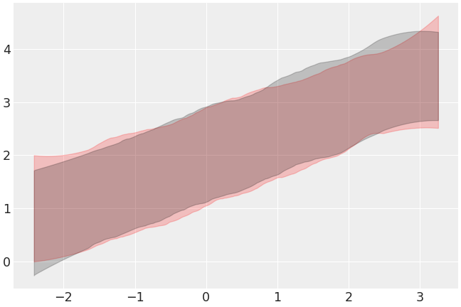

arviz.plot_hdi¶
-
arviz.plot_hdi(x, y=None, hdi_prob=None, hdi_data=None, color='C1', circular=False, smooth=True, smooth_kwargs=None, fill_kwargs=None, plot_kwargs=None, hdi_kwargs=None, ax=None, backend=None, backend_kwargs=None, show=None, credible_interval=None)[source]¶ Plot HDI intervals for regression data.
- Parameters
- xarray-like
Values to plot.
- yarray-like, optional
Values from which to compute the HDI. Assumed shape
(chain, draw, \*shape). Only optional if hdi_data is present.- hdi_dataarray_like, optional
Precomputed HDI values to use. Assumed shape is
(*x.shape, 2).- hdi_probfloat, optional
Probability for the highest density interval. Defaults to
stats.hdi_probrcParam.- colorstr, optional
Color used for the limits of the HDI and fill. Should be a valid matplotlib color.
- circularbool, optional
Whether to compute the HDI taking into account x is a circular variable (in the range [-np.pi, np.pi]) or not. Defaults to False (i.e non-circular variables).
- smoothboolean, optional
If True the result will be smoothed by first computing a linear interpolation of the data over a regular grid and then applying the Savitzky-Golay filter to the interpolated data. Defaults to True.
- smooth_kwargsdict, optional
Additional keywords modifying the Savitzky-Golay filter. See
scipy.signal.savgol_filter()for details.- fill_kwargsdict, optional
Keywords passed to
matplotlib.axes.Axes.fill_between()(use fill_kwargs={‘alpha’: 0} to disable fill) or tobokeh.plotting.figure.Figure.patch().- plot_kwargsdict, optional
HDI limits keyword arguments, passed to
matplotlib.axes.Axes.plot()orbokeh.plotting.figure.Figure.patch().- hdi_kwargsdict, optional
Keyword arguments passed to
hdi(). Ignored ifhdi_datais present.- axaxes, optional
Matplotlib axes or bokeh figures.
- backend{“matplotlib”,”bokeh”}, optional
Select plotting backend.
- backend_kwargsbool, optional
These are kwargs specific to the backend being used. Passed to ::``
- showbool, optional
Call backend show function.
- credible_intervalfloat, optional
Deprecated: Please see hdi_prob
- Returns
- axesmatplotlib axes or bokeh figures
See also
hdiCalculate highest density interval (HDI) of array for given probability.
Examples
Plot HDI interval of simulated regression data using y argument:
>>> import numpy as np >>> import arviz as az >>> x_data = np.random.normal(0, 1, 100) >>> y_data = np.random.normal(2 + x_data * 0.5, 0.5, (2, 50, 100)) >>> az.plot_hdi(x_data, y_data)

Precalculate HDI interval per chain and plot separately:
>>> hdi_data = az.hdi(y_data, input_core_dims=[["draw"]]) >>> ax = az.plot_hdi(x_data, hdi_data=hdi_data[0], color="r", fill_kwargs={"alpha": .2}) >>> az.plot_hdi(x_data, hdi_data=hdi_data[1], color="k", ax=ax, fill_kwargs={"alpha": .2})
